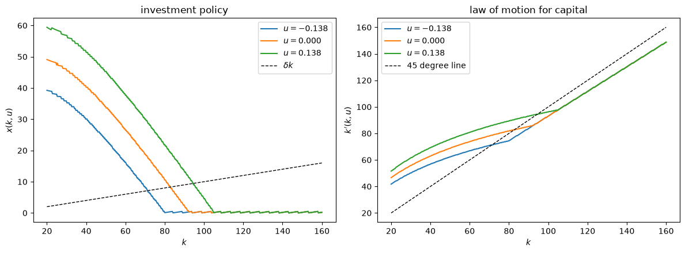
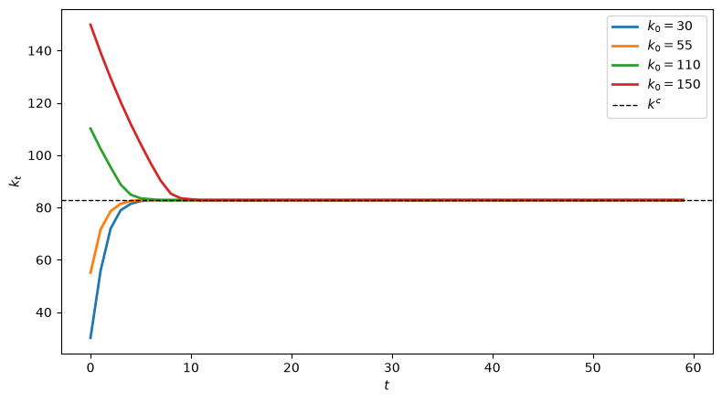
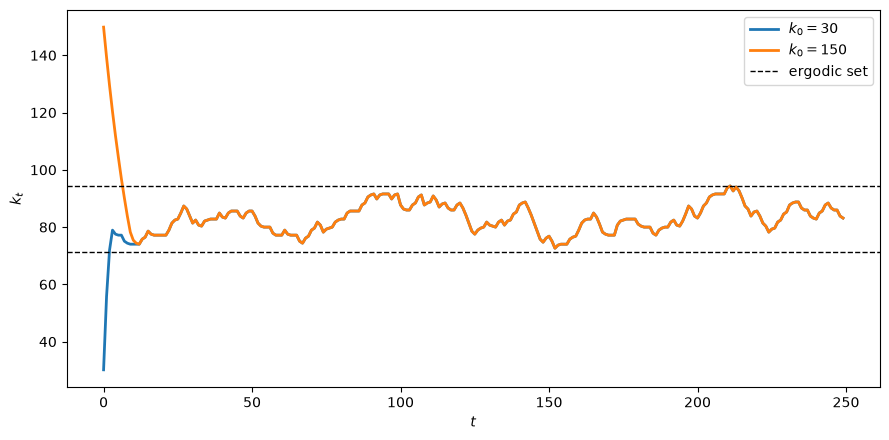
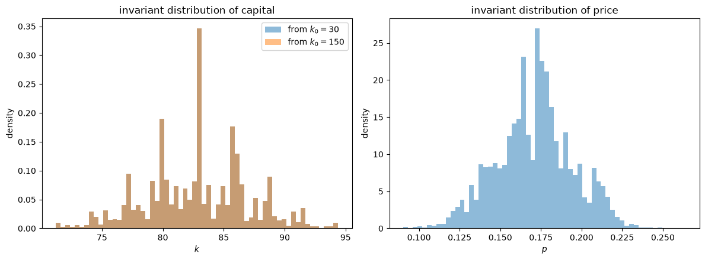
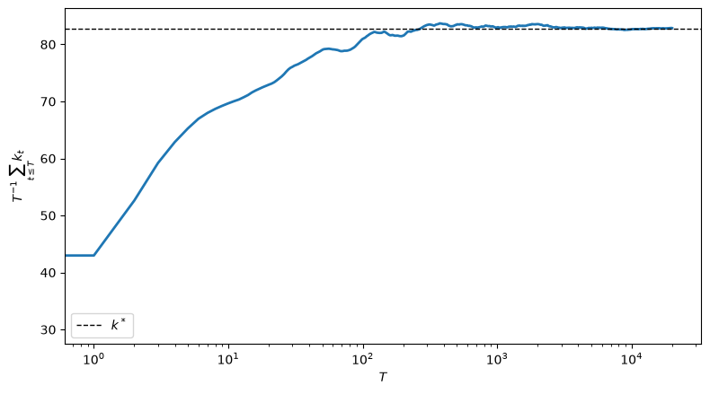
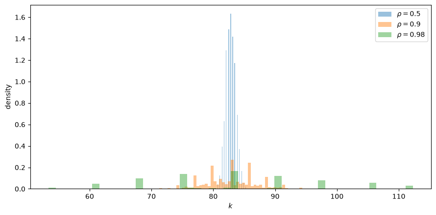

115. 不确定性下的投资#
除了 Anaconda 中已有的库之外，本讲座还需要以下库：
!pip install quantecon
115.1. 概述#
本讲座研究 Lucas and Prescott [1971]，这篇论文有助于点燃一场“理性预期革命”。
卢卡斯和普雷斯科特研究了一个竞争性行业，其中
需求每期都随机变化
企业面临调整资本存量的成本
企业必须预测未来价格才能决定投资多少
企业用来预测价格的概率分布恰好等于它们的投资决策实际生成的概率分布
最后一点正是 Muth [1961] 所称的理性预期。
QuantEcon 讲座 理性预期均衡 呈现的可以说是卢卡斯-普雷斯科特模型的一个“简化版”。
那篇讲座研究的是没有不确定性的线性二次型行业。
本讲座则描述了卢卡斯和普雷斯科特实际构建的更加宏大的结构。
相对于简化版，卢卡斯和普雷斯科特
让需求由一个马尔可夫过程 \(\{u_t\}\) 来推动，因此均衡是一个随机过程而非确定性路径
允许将投资转化为产能的技术是非线性的
证明竞争均衡存在且唯一
证明均衡是一个规划问题的解，该规划问题最大化贴现的消费者剩余
证明均衡是状态 \((k_t, u_t)\) 上的马尔可夫过程
提供了该马尔可夫过程存在不变概率分布且从任意初始条件都收敛于该分布的条件
最后一点正是对后续研究影响最大的部分。
一个均衡是具有不变分布的马尔可夫过程的模型，就是一个可以用来对照时间序列数据的模型。
这一观察为拉尔斯·彼得·汉森和托马斯·萨金特随后发展的理性预期计量经济学奠定了基础 [Hansen and Sargent, 1980]。
在此过程中，我们将描述 Prescott and Mehra [1980] 后来如何将卢卡斯-普雷斯科特的结构提炼成递归竞争均衡的一般定义。
后续讲座 不确定性下的最优增长与托宾 q 研究了对一个单部门最优增长模型提出同样问题的论文，即 Brock and Mirman [1972]，以及一篇利用该模型思考托宾 \(q\) 的论文，即 Sargent [1980]。
让我们从一些导入开始：
import numpy as np
import matplotlib.pyplot as plt
import quantecon as qe
from collections import namedtuple
115.2. 行业#
一个行业由许多小企业组成。
每个企业用单一投入品——资本 \(k_t\)——生产单一产出品 \(q_t\)。
生产具有规模报酬不变的性质，通过适当选取单位，生产函数为
由于资本是唯一投入，产出以正价格出售，因此每个企业都以满负荷生产，即 \(q_t = k_t\)。
令 \(x_t\) 表示总投资。
下一期产能与本期产能及投资的关系为
其中 \(h\) 是有界、连续可微、递增且严格凹的。
\(h\) 的严格凹性正是调整成本产生的原因：单位资本的投资率翻倍所带来的产能增量少于原来的两倍。
调整成本正是企业逐步调整资本存量，而不是立即跳跃到长期目标水平的原因。
假设 \(\delta = h^{-1}(1)\) 存在且满足 \(0 < \delta < 1\)。
那么 \(x_t = \delta k_t\) 恰好是维持产能所需的投资率，因此 \(\delta\) 起到折旧率的作用。
令 \(p_t\) 为产出价格，令 \(\beta = 1/(1+r)\)，其中 \(r > 0\) 是资本成本。
企业的现值为
由于给定行业资本存量在各企业间的分配并不重要，我们可以将 \(k_t, x_t, q_t\) 既用作企业变量，也用作行业变量，二者可互换使用。
等价地，我们可以把这个行业看作只有一个价格接受者的竞争性企业。
行业需求受到随机冲击的影响：
其中 \(D\) 关于 \(q_t\) 连续且严格递减，关于 \(u_t\) 递增，因此 \(u_t\) 增加会使需求曲线向右移动。
需求扰动 \(\{u_t\}\) 是一个马尔可夫过程，转移分布为 \(p(\cdot, u)\)，这意味着在 \(u_t = u\) 的条件下，\(u_{t+1} \in A\) 的概率为 \(\int_A p(dz, u)\)。
115.3. 企业与已安装资本的价格#
在研究均衡之前，卢卡斯和普雷斯科特先驻足思考一个富有启发性的问题：单个企业究竟需要知道什么？
令 \(w_t\) 为一单位已安装资本的当期市场价值，\(w^*_t\) 为预期下一期将占优的单位价值。
一个在 \(t\) 期初拥有资本 \(k_t\) 并投资 \(x\) 的企业，将在下一期获得价值为 \(\beta k_t h(x/k_t) w^*_t\) 的资本，而其成本为 \(x\)，因此它求解
企业的当期价值为
一阶条件为
联立求解 (115.5) 和 (115.6) 中的 \(x\) 与 \(w^*_t\)，可得如下形式的投资函数
卢卡斯和普雷斯科特指出，(115.7) 本质上就是格伦费尔德在实证工作中使用过的投资函数，其中企业的市场价值作为解释变量。
不过他们的论证比格伦费尔德的更有力：企业根本不需要预测自己未来的收入流。
它只需要知道证券市场对一单位已安装资本所赋予的价值。
读者会认出这正是后来被称为托宾 \(q\) 投资理论的一个版本。
但方程 (115.7) 只是一个一致性要求，还算不上是资本积累理论，因为 \(w_t\) 的路径仍然未知。
要确定 \(w_t\)，我们必须研究均衡。
115.4. 理性预期均衡#
企业必须预测未来价格。
卢卡斯和普雷斯科特将常规方法描述为假设一个预测规则——例如“适应性预期”——由此产生投资行为，再结合需求生成实际的价格过程。
他们反对这种做法，理由是：如果潜在的扰动确实具有规律性的随机特征，那么除非出现巧合，预测价格与实际价格将具有不同的概率分布，而这种差异将是持续的、代价高昂的，同时也是容易被纠正的。
于是他们走向另一个极端，假设实际价格与预期价格具有相同的概率分布。
为了精确表述这一点，先固定初始状态 \((k_0, u_0)\)。
由于价格取决于需求冲击的历史，预期价格过程是关于 \((u_1, \ldots, u_t)\) 的函数序列 \(\{p_t\}\)。
类似地，投资-产出计划是一对关于 \((u_1, \ldots, u_t)\) 的函数序列 \(\{q_t, x_t\}\)——即一个提前说明企业在每一种可能历史之后将如何行动的相机抉择计划。
定义 115.1
对于固定的初始状态 \((k_0, u_0)\)，一个行业均衡是一个三元组序列 \(\{q^0_t, x^0_t, p^0_t\}\)，使得
理性预期的要求就明明白白地隐藏在 定义 115.1 之中。
企业在最大化时视为给定的价格过程 \(\{p^0_t\}\)，恰好就是它们自身决策通过需求曲线所生成的那个价格过程。
这正是讲座 理性预期均衡 中不动点思想的翻版：总产出的感知运动规律 \(H\) 必须等于由所产生的决策规则得出的实际运动规律。
区别在于，这里的不动点是在历史函数序列空间中，而不是在线性决策规则空间中。
备注
卢卡斯和普雷斯科特对理性假设了什么、没假设什么十分谨慎。
他们写道，他们“事先放弃了对企业如何将当前信息转化为价格预测这一过程有所启示的任何希望”。
他们也为这一假设辩护：如果需求变化过程确实具有规律的、平稳的结构，那么在他们意义上的理性预期“肯定比任何简单的适应性方案更为合理”；如果不是这样，那么采用其他某种预期假设“肯定不会改善局面”。
115.5. 作为规划问题的均衡#
我们该如何计算一个由如此庞大空间中的不动点所定义的对象呢？
卢卡斯和普雷斯科特的答案，正是讲座 理性预期均衡 所使用的手法：找到一个规划问题，其解就是均衡。
将消费者剩余定义为需求曲线下方的面积
并将扣除投资成本后的贴现消费者剩余定义为
与最大化 \(S\) 的问题相关联的泛函方程为
定理 115.1
泛函方程 (115.9) 具有唯一的有界解 \(v\)，且对每一个 \((k,u)\)，上确界都在唯一的 \(x(k,u)\) 处取得。
用该策略函数表示，给定 \((k_0, u_0)\) 的唯一行业均衡为
证明分为两部分，两部分对后续工作都很重要。
第一部分说明竞争均衡最大化 \(S\)，反之亦然。
这是对无限维商品空间中福利定理的一种应用，用到了德布鲁的估价均衡以及普雷斯科特和卢卡斯在一篇姊妹论文中发展的价格体系。
卢卡斯和普雷斯科特明确指出，他们只是把这种联系当作一种计算工具来使用：“\(S\) 的福利意义并不重要。我们只对利用 \(S\) 的最大化与竞争均衡之间的联系来确定后者的性质感兴趣。”
第二部分说明规划问题由泛函方程 (115.9) 求解。
在这里他们使用算子
并验证 \(T\) 是单调的且满足一个贴现性质，因此根据布莱克韦尔定理 [Blackwell, 1965]，它有唯一的不动点，且逐次逼近会收敛到该不动点。
他们还证明了 \(T\) 保持了关于 \(k\) 的凹性和单调性，这就得到了唯一且连续的策略函数 \(x(k,u)\)。
备注
这些论证如今已是标准做法，在 Stokey et al. [1989] 中有详尽的讨论。
在 1971 年时它们还不是标准做法，这也是这篇论文难读的原因之一。
论文中大量篇幅都用于处理可测性方面的细节——贝尔函数、博雷尔集——而在现代处理方式中，这些内容通常会放到附录中。
定理 115.1 的两个特征值得强调。
第一，均衡是递归的：\((k_t, u_t)\) 二元组是一个马尔可夫过程，均衡价格和数量是关于它的时不变函数。
第二，均衡的计算完全无需迭代一个从信念到结果的映射。
讲座 理性预期均衡 解释了为什么这一点很重要：从感知运动规律到实际运动规律的映射 \(\Phi\) 不是一个压缩映射，对它进行迭代可能会发散。
规划问题用一个是压缩映射的动态规划，取代了一个不可靠的不动点计算。
115.6. 递归竞争均衡#
Prescott and Mehra [1980] 后来提炼出了卢卡斯和普雷斯科特所利用的一般结构。
他们的目标是用对均衡决策规则的搜索，取代阿罗和德布鲁风格的对均衡相机抉择函数序列的搜索。
这样的规则将当前行动表述为少数几个状态变量的函数，这些状态变量概括了过去决策和当前信息的影响。
正如普雷斯科特和梅拉所说，这些均衡决策规则“必须是时不变的，才能应用标准的时间序列方法，而这就要求有一个递归结构”。
这句话正是从卢卡斯-普雷斯科特理论通往计量经济学的桥梁。
在递归竞争均衡中
状态变量应具有最小的维数，仅索引那些可能随时间变化的因素
状态是可观测的，或者是可观测量的可逆函数
在给定当前决策和当前状态的条件下，下一期状态的条件分布是时不变的
个体决策规则在给定均衡定价函数的条件下是最优的，且市场出清
普雷斯科特和梅拉指出，他们的结构“涵盖了卢卡斯和普雷斯科特在分析不确定性下均衡投资时所考虑的结构”。
他们的分析还以“比通过与状态相机抉择均衡等价性来论证更简单、更直接的方式”确立了递归均衡的最优性以及帕累托最优的可支持性。
对我们而言，重要的一点是 定理 115.1 恰好产生了理性预期计量经济学所需要的那些对象：由马尔可夫状态驱动的时不变决策规则，以及将冲击过程参数与决策规则参数联系起来的跨方程约束。
115.7. 一个可计算的版本#
现在让我们来计算该模型某个版本的均衡。
我们采用调整技术
它满足卢卡斯-普雷斯科特的假设：当 \(\alpha < 1\) 时 \(h\) 递增且严格凹，且 \(h(\delta) = 1\)，因此 \(\delta\) 是维持性投资率。
当 \(\alpha = 1\) 时，我们就得到熟悉的线性积累方程 \(k_{t+1} = (1-\delta) k_t + x_t\)。
当 \(\alpha < 1\) 时存在调整成本。
注意 \(h'(\delta) = \alpha\)，我们下面会用到这一事实。
我们采用线性逆需求曲线
这与讲座 理性预期均衡 中的需求曲线一致，只是多了一个由 \(u\) 带来的位移。
消费者剩余于是为
需求扰动遵循高斯 AR(1) 过程
这正是卢卡斯和普雷斯科特自己给出的一个满足其假设的过程示例。
我们用陶臣方法对其进行离散化。
与其直接选择投资 \(x\)，不如让规划者在网格上选择下一期资本 \(k'\) 更为方便，再对 (115.2) 求逆，得到所需的投资
Model = namedtuple("Model", "r β δ α a0 a1 k u P X feasible s")
def create_model(r=0.05, δ=0.10, α=0.70, a0=1.0, a1=0.01,
ρ=0.9, σ=0.02, n_u=9, n_k=400, k_lo=20.0, k_hi=160.0):
"Discretize the Lucas-Prescott industry."
β = 1 / (1 + r)
mc = qe.markov.tauchen(n_u, ρ, σ)
u, P = mc.state_values, mc.P
k = np.linspace(k_lo, k_hi, n_k)
# investment needed to move from k (rows) to k' (columns)
X = k[:, None] * ((k[None, :] / k[:, None])**(1/α) - (1 - δ))
feasible = X >= 0
s = (a0 + u[None, :]) * k[:, None] - a1 * k[:, None]**2 / 2
return Model(r, β, δ, α, a0, a1, k, u, P, X, feasible, s)
我们通过值函数迭代来求解规划者的贝尔曼方程 (115.9)，并使用霍华德策略改进步骤来加快收敛速度。
def solve_model(m, tol=1e-8, maxit=1000, howard=30):
"Solve the planning problem; return value function and policies."
n_k, n_u = len(m.k), len(m.u)
R = np.where(m.feasible, -m.X, -1e12)
rows, cols = np.arange(n_k)[:, None], np.arange(n_u)[None, :]
v = m.s.copy()
for it in range(maxit):
EV = v @ m.P.T # EV[k', u] = E[v(k', u') | u]
obj = R[:, :, None] + m.β * EV[None, :, :] # (k, k', u)
idx = obj.argmax(axis=1) # choice of k' given (k, u)
v_new = m.s + np.take_along_axis(obj, idx[:, None, :], axis=1)[:, 0, :]
for _ in range(howard): # policy evaluation steps
EV = v_new @ m.P.T
v_new = m.s + R[rows, idx] + m.β * EV[idx, cols]
if np.max(np.abs(v_new - v)) < tol:
v = v_new
break
v = v_new
k_next = m.k[idx]
x = np.take_along_axis(m.X, idx, axis=1)
return v, idx, k_next, x
m = create_model()
v, idx, k_next, x = solve_model(m)
print(f"grid: {len(m.k)} capital points, {len(m.u)} demand states")
grid: 400 capital points, 9 demand states
让我们来看看均衡投资策略以及资本的运动规律。
fig, axes = plt.subplots(1, 2, figsize=(12, 4.5))
for j in [0, len(m.u)//2, len(m.u)-1]:
axes[0].plot(m.k, x[:, j], label=f'$u = {m.u[j]:.3f}$')
axes[1].plot(m.k, k_next[:, j], label=f'$u = {m.u[j]:.3f}$')
axes[0].plot(m.k, m.δ * m.k, 'k--', lw=1, label=r'$\delta k$')
axes[0].set_xlabel('$k$'); axes[0].set_ylabel('$x(k, u)$')
axes[0].set_title('investment policy')
axes[1].plot(m.k, m.k, 'k--', lw=1, label='45 degree line')
axes[1].set_xlabel('$k$'); axes[1].set_ylabel("$k'(k, u)$")
axes[1].set_title('law of motion for capital')
for ax in axes:
ax.legend()
plt.tight_layout()
plt.show()

图 115.1 投资策略与运动规律#
当 \(x(k,u)\) 位于维持线 \(\delta k\) 之上时资本上升，位于其下时资本下降。
需求越高，投资策略就越向上移动，因此需求强劲时行业能够维持的资本存量也更高。
115.7.1. 已安装资本的价格#
规划问题还给出了出现在 (115.5) 中的一单位已安装资本的市场价值 \(w\)。
令 \(z = x/k\) 表示投资率。
对贝尔曼方程 (115.9) 求导并运用包络条件，可得
而关于 \(x\) 的一阶条件为
将二者结合起来，就以闭合形式表达出了影子价格，
已安装资本的边际价值，等于当前产出价格加上该单位资本带入未来的产能价值。
注意到 (115.10) 正是企业一阶条件 (115.6) 的规划者对应版本，其中 \(w^* = \mathbb{E}[v_k(k',u') \mid u]\)。
这种对应关系正是讲座 理性预期均衡 中“大 \(K\)、小 \(k\)”逻辑在卢卡斯-普雷斯科特形式下的体现。
h = lambda z, m: (1 - m.δ + z)**m.α
h_prime = lambda z, m: m.α * (1 - m.δ + z)**(m.α - 1)
z = x / m.k[:, None]
D = m.a0 + m.u[None, :] - m.a1 * m.k[:, None]
w = D + h(z, m) / h_prime(z, m) - z
# check the first-order condition (up to grid error)
Ew = np.take_along_axis(w @ m.P.T, idx, axis=0)
resid = np.abs(m.β * Ew - 1 / h_prime(z, m))
scale = np.median(1 / h_prime(z, m))
near = (m.k > 70) & (m.k < 95) # capital levels the industry actually visits
print(f"typical size of each side of the FOC: {scale:.3f}")
print(f"median residual, all k: {np.median(resid):.2e}")
print(f"median residual, 70 < k < 95: {np.median(resid[near]):.2e}")
typical size of each side of the FOC: 1.396
median residual, all k: 5.35e-03
median residual, 70 < k < 95: 2.39e-03
残差仅为所比较各项量级的十分之几个百分点，这证实了 (115.11)。
它没有完全消失，是因为规划者从有限网格中选择 \(k'\)，因此策略函数每次都会跳过一整个网格点。
在行业从不涉足的那些极端资本水平上，残差要大得多。
115.8. 需求序列独立时的长期行为#
卢卡斯和普雷斯科特接下来探讨了长期会发生什么。
他们处理了两种情形，第一种是特殊情形，即当 \(s \neq t\) 时 \(u_t\) 与 \(u_s\) 相互独立。
在 \(p(dz,u)\) 不依赖于 \(u\) 的情况下检视贝尔曼方程 (115.9)，可以看出最优投资率 \(x(k,u)\) 不依赖于 \(u\)。
这时需求变化只是一次纯粹的意外收获：它不告诉企业任何关于未来需求的信息，因此不改变投资。
于是，资本存量按照 \(k_{t+1} = k_t h(x(k_t)/k_t)\) 的规律确定性地演化，而产出无弹性地供给，需求冲击只改变价格。
定理 115.2
在独立性假设下，资本存量存在两种可能性。
如果
且 \(k_0 > 0\)，那么 \(k_t\) 会单调收敛到唯一的稳态值 \(k^c\)，该值由下式隐式给出
否则资本会单调收敛到零。
条件 (115.13) 有一个熟悉的解释。
左边是资本的预期边际收益产品，这里恰好就是预期产出价格，因为边际实物产品为一。
右边是资本的使用者成本：折旧项 \(\delta\) 加上利息项 \(r/h'(\delta)\)。
卢卡斯和普雷斯科特指出，这种情形与教科书中短期供给和长期供给之间的二分法非常吻合。
在短期，产能是固定的，需求决定价格。
在长期，需求波动完全不起作用：产能完全由平均需求决定。
让我们通过设定 \(\rho = 0\) 来数值验证这一点。
m_iid = create_model(ρ=0.0)
v_iid, idx_iid, k_next_iid, x_iid = solve_model(m_iid)
# does the policy depend on u?
print("investment policy independent of u:",
np.allclose(x_iid, x_iid[:, [0]], atol=1e-10))
# stationary capital: where x(k) crosses δ k
def stationary_k(x_col, m):
"Capital where investment just maintains capacity."
d = x_col - m.δ * m.k
i = np.where(np.sign(d[:-1]) != np.sign(d[1:]))[0]
if len(i) == 0:
return np.nan
i = i[0]
return np.interp(0, [d[i+1], d[i]], [m.k[i+1], m.k[i]])
kc = stationary_k(x_iid[:, 0], m_iid)
user_cost = m_iid.δ + m_iid.r / h_prime(m_iid.δ, m_iid)
print(f"\nstationary capital k^c = {kc:.3f}")
print(f"expected price at k^c = {m_iid.a0 - m_iid.a1 * kc:.5f}")
print(f"user cost δ + r / h'(δ) = {user_cost:.5f}")
investment policy independent of u: True
stationary capital k^c = 82.807
expected price at k^c = 0.17193
user cost δ + r / h'(δ) = 0.17143
稳态资本存量使预期价格等于资本的使用者成本，正如 (115.13) 所要求的那样。
现在让我们确认资本是单调地趋近于 \(k^c\) 的，且无论从哪个方向趋近都是如此。
def capital_path(m, idx, k0, T=60, u_index=None):
"Simulate capital, holding the demand state fixed if u_index is given."
ki = np.abs(m.k - k0).argmin()
path = np.empty(T)
j = len(m.u) // 2 if u_index is None else u_index
for t in range(T):
path[t] = m.k[ki]
ki = idx[ki, j]
return path
fig, ax = plt.subplots(figsize=(8, 4.5))
for k0 in (30.0, 55.0, 110.0, 150.0):
ax.plot(capital_path(m_iid, idx_iid, k0), lw=2, label=f'$k_0 = {k0:.0f}$')
ax.axhline(kc, color='k', ls='--', lw=1, label='$k^c$')
ax.set_xlabel('$t$'); ax.set_ylabel('$k_t$')
ax.legend()
plt.tight_layout()
plt.show()

图 115.2 需求序列独立时的资本路径#
收敛是单调的，且极限并不依赖于初始资本存量。
115.9. 需求序列相关时的长期行为#
更有意思的情形是允许需求变化呈正序列相关，此时今天的高需求预示着明天的高需求。
现在当前的需求状态确实会影响投资，资本存量也变得真正具有随机性。
为了刻画长期行为，卢卡斯和普雷斯科特对 \(\{u_t\}\) 过程施加了额外的限制，其目的是保证 \((k_t, u_t)\) 的分布最终会稳定下来。
用文字来说，他们假设
从任何当前的 \(u\) 出发，下一期的冲击落入任何非退化区间的概率都为正
\(u_t\) 具有不依赖于初始值 \(u_0\) 的极限分布，并且该分布对每个非退化区间都赋予正概率
\(\mathbb{P}\{u_{t+1} \geq x \mid u_t\}\) 关于 \(u_t\) 严格递增，因此今天的高需求总是预示着明天的高需求
当 \(u \to \pm\infty\) 时，消费者剩余 \(s(k,u)\) 一致收敛
一个 \(0 < \rho < 1\) 的高斯 AR(1) 过程满足这些条件，这也正是他们给出并且我们进行模拟的示例。
之后的分析通过界定资本存量的范围来展开。
令 \(\bar v(k)\) 和 \(\underline v(k)\) 分别为当 \(u \to \infty\) 和 \(u \to -\infty\) 时预期值函数的极限，令 \(\bar x(k)\) 和 \(\underline x(k)\) 为相应的投资策略。
由于投资关于 \(u\) 递增，这两者对每一个 \(u\) 下的策略都构成了上下界。
令 \(\bar k\) 满足 \(\bar x(k) = \delta k\)，令 \(\underline k\) 满足 \(\underline x(k) = \delta k\)。
这两个值分别是在永久性最大需求和永久性最小需求下能够维持的资本存量。
卢卡斯和普雷斯科特随后证明了
集合 \((0, \underline k)\) 和 \((\bar k, \infty)\)，与任意需求状态配对，都是暂态的：行业一旦离开这些集合就不会返回，且从任何起点出发，以趋近于一的概率进入 \((\underline k, \bar k)\)
集合 \(B = (\underline k, \bar k) \times E\)（其中 \(E\) 是 \(u\) 可能取值的集合）是一个单一遍历集
定理 115.3
如果 \(B\) 非空，那么对所有 \((k,u)\) 以及每个初始状态 \((k_0, u_0)\)，
都存在，且不依赖于 \((k_0, u_0)\)。
函数 \(P\) 是一个概率分布，它对暂态集赋予概率零，对 \(B\) 中任何正面积的子集赋予正概率。
定理 115.4
如果 \(B\) 非空，那么对任意初始状态，以概率一有
其中 \(k^*\) 是 \(k\) 在不变分布 \(P\) 下的均值。
遍历集非空——因而这种长期行为才成立——当且仅当
这说明需求必须有时强劲到足以支撑持有任何数量的资本。
定理 115.3 和 定理 115.4 正是使这个模型成为计量经济学家可以使用的对象的那些结果。
第一个结果说明该模型意味着可观测时间序列存在一个良定义的平稳概率分布。
第二个结果说明由单个长实现计算出的样本均值收敛于该分布相应的总体矩。
让我们为我们的参数设定计算界限 \(\underline k\) 和 \(\bar k\)，并检验模拟结果是否符合定理所说的那样。
bounds = np.array([stationary_k(x[:, j], m) for j in range(len(m.u))])
k_lo_star, k_hi_star = bounds.min(), bounds.max()
print(f"conditional stationary capital, lowest demand state: {k_lo_star:.2f}")
print(f"conditional stationary capital, highest demand state: {k_hi_star:.2f}")
print(f"ergodic set for capital: ({k_lo_star:.2f}, {k_hi_star:.2f})")
conditional stationary capital, lowest demand state: 71.23
conditional stationary capital, highest demand state: 94.39
ergodic set for capital: (71.23, 94.39)
现在我们用同一需求冲击序列，从两个截然不同的初始资本存量出发，模拟均衡马尔可夫过程。
def simulate(m, idx, k0, T=20_000, seed=0):
"Simulate the equilibrium Markov process for (k, u)."
mc = qe.MarkovChain(m.P, m.u)
u_idx = mc.simulate_indices(T, init=len(m.u)//2, random_state=seed)
ki = np.abs(m.k - k0).argmin()
k_path = np.empty(T)
for t in range(T):
k_path[t] = m.k[ki]
ki = idx[ki, u_idx[t]]
p_path = m.a0 + m.u[u_idx] - m.a1 * k_path
return k_path, p_path
k_low, p_low = simulate(m, idx, k0=30.0, seed=1)
k_high, p_high = simulate(m, idx, k0=150.0, seed=1)
fig, ax = plt.subplots(figsize=(9, 4.5))
ax.plot(k_low[:250], lw=2, label='$k_0 = 30$')
ax.plot(k_high[:250], lw=2, label='$k_0 = 150$')
ax.axhline(k_lo_star, color='k', ls='--', lw=1)
ax.axhline(k_hi_star, color='k', ls='--', lw=1, label='ergodic set')
ax.set_xlabel('$t$'); ax.set_ylabel('$k_t$')
ax.legend()
plt.tight_layout()
plt.show()

图 115.3 进入遍历集的资本路径#
两条路径都被吸引进入遍历集，此后便永远在其中波动。
下图比较了从两次模拟中计算出的资本长期分布，两者都已剔除了预烧样本。
burn = 2000
fig, axes = plt.subplots(1, 2, figsize=(12, 4.5))
axes[0].hist(k_low[burn:], bins=60, density=True, alpha=0.5, label='from $k_0 = 30$')
axes[0].hist(k_high[burn:], bins=60, density=True, alpha=0.5, label='from $k_0 = 150$')
axes[0].set_xlabel('$k$'); axes[0].set_ylabel('density')
axes[0].set_title('invariant distribution of capital')
axes[0].legend()
axes[1].hist(p_low[burn:], bins=60, density=True, alpha=0.5)
axes[1].set_xlabel('$p$'); axes[1].set_ylabel('density')
axes[1].set_title('invariant distribution of price')
plt.tight_layout()
plt.show()
print(f"mean capital from k_0 = 30: {k_low[burn:].mean():.3f}")
print(f"mean capital from k_0 = 150: {k_high[burn:].mean():.3f}")
print(f"range visited: ({k_low[burn:].min():.2f}, {k_low[burn:].max():.2f})")

图 115.4 资本与价格的不变分布#
mean capital from k_0 = 30: 82.792
mean capital from k_0 = 150: 82.792
range visited: (71.23, 94.39)
正如 定理 115.3 所保证的那样，两个直方图相互吻合，且资本存量始终停留在遍历集之内。
最后，这里是 定理 115.4 的实际体现：来自单个实现的时间平均值收敛于不变分布的均值。
running_mean = np.cumsum(k_low) / np.arange(1, len(k_low) + 1)
fig, ax = plt.subplots(figsize=(8, 4.5))
ax.plot(running_mean, lw=2)
ax.axhline(k_low[burn:].mean(), color='k', ls='--', lw=1, label='$k^*$')
ax.set_xlabel('$T$'); ax.set_ylabel(r'$T^{-1}\sum_{t \leq T} k_t$')
ax.set_xscale('log')
ax.legend()
plt.tight_layout()
plt.show()

图 115.5 资本的时间平均#
115.10. 与理性预期讲座的关系#
值得把本讲座与 理性预期均衡 之间的对应关系整理一下。
本讲座 |
||
|---|---|---|
不确定性 |
无 |
马尔可夫需求扰动 \(u_t\) |
调整成本 |
二次型，\(\gamma (y'-y)^2/2\) |
凹性技术 \(k' = k h(x/k)\) |
均衡对象 |
信念 \(H\)，满足 \(Y' = H(Y)\) |
价格过程 \(\{p_t\}\)，等价地为策略 \(x(k,u)\) |
均衡概念 |
\(H\) 是 \(\Phi\) 的不动点 |
预期价格分布等于实际价格分布 |
求解方式 |
规划问题，作为 LQ 问题求解 |
规划问题，用动态规划求解 |
规划者所最大化的对象 |
消费者剩余加生产者剩余 |
贴现消费者剩余 (115.8) |
均衡动态 |
\(Y_{t+1} = \kappa_0 + \kappa_1 Y_t\) |
\((k_t, u_t)\) 上的马尔可夫过程 |
长期行为 |
收敛到稳态 |
收敛到不变分布 |
二者最深层的共同点在于计算均衡的策略。
在两篇讲座中，直接方法——猜测一个运动规律、计算由此引出的最优反应、然后迭代——都是不可靠的，因为这个映射未必是压缩映射。
在两篇讲座中，解决办法都是找到一个欧拉方程与均衡条件相吻合的规划问题，然后用动态规划求解该规划问题。
讲座 理性预期均衡 通过为一个特定的线性二次型例子匹配欧拉方程来验证这种对应关系。
定理 115.1 是一般性的陈述：对这一类经济体而言，竞争均衡的集合与规划问题解的集合是重合的，且二者都是单点集。
简化版所无法展示的——因为它没有不确定性——正是卢卡斯和普雷斯科特所追求的回报：一个作为平稳随机过程的均衡，具有不变分布和遍历时间平均值。
正是这一点使得用数据检验这样的模型成为可能，并进而催生了理性预期计量经济学。
姊妹讲座 不确定性下的最优增长与托宾 q 在一个单部门增长模型中恰恰延续了这一主题。
Brock and Mirman [1972] 在那里证明了 定理 115.3 和 定理 115.4 的对应结果：资本的分布收敛到一个不依赖于初始条件的不变分布，且沿着单一实现计算的时间平均值收敛于总体矩。
那篇讲座还展示了这样一个规划问题中资本的影子价格在竞争均衡中会变成什么——即托宾的 \(q\)——并考察了一个关于价值函数可微性的微妙问题，答案就取决于这一点。
115.11. 练习#
练习 115.1
(115.13) 中资本的使用者成本通过 \(h'(\delta) = \alpha\) 依赖于调整技术的曲率参数 \(\alpha\)。
解释为什么较低的 \(\alpha\)——意味着更强的调整成本——应当降低长期资本存量。
对于序列独立的情形，为 \(\alpha \in \{0.4, 0.6, 0.8, 1.0\}\) 分别计算稳态资本存量 \(k^c\)，并在每种情形下验证边际条件 (115.13) 是否成立。
确认当 \(\alpha = 1\) 时，积累方程为 \(k_{t+1} = (1-\delta)k_t + x_t\)，且使用者成本为教科书式的 \(\delta + r\)。
解答 练习 115.1
较低的 \(\alpha\) 使 \(h\) 更凹，因此单位投资在边际上买到的产能更少。
由于 \(h'(\delta) = \alpha\)，使用者成本中的利息部分 \(r / h'(\delta) = r/\alpha\) 随着 \(\alpha\) 的降低而升高。
更高的使用者成本必须由更高的预期价格来匹配，而由于需求曲线向下倾斜，这意味着更小的资本存量。
print(f"{'α':>5} {'k^c':>10} {'E[price]':>12} {'user cost':>12}")
for α in (0.4, 0.6, 0.8, 1.0):
m_α = create_model(ρ=0.0, α=α, k_lo=5.0, k_hi=160.0, n_k=600)
_, _, _, x_α = solve_model(m_α)
kc_α = stationary_k(x_α[:, 0], m_α)
price = m_α.a0 - m_α.a1 * kc_α
cost = m_α.δ + m_α.r / h_prime(m_α.δ, m_α)
print(f"{α:>5.1f} {kc_α:>10.3f} {price:>12.5f} {cost:>12.5f}")
α k^c E[price] user cost
0.4 77.454 0.22546 0.22500
0.6 81.594 0.18406 0.18333
0.8 83.664 0.16336 0.16250
1.0 84.958 0.15042 0.15000
更强的调整成本（更低的 \(\alpha\)）确实降低了长期资本存量。
当 \(\alpha = 1\) 时，我们有 \(h(z) = 1 - \delta + z\)，因此 \(k' = k(1 - \delta + x/k) = (1-\delta)k + x\)，且 \(h'(\delta) = 1\)，因此使用者成本为 \(\delta + r\)。
练习 115.2
定理 115.1 说明规划者的策略就是竞争均衡。
利用讲座 理性预期均衡 中“大 \(K\)、小 \(k\)”的逻辑，用数值方法验证这一点。
求解一个价格接受型个体企业的问题，该企业
拥有资本 \(k_i\)，并在同样的积累技术约束下选择 \(k_i'\)
将总资本存量 \(K\) 视为给定，\(K\) 按上文计算出的规划者策略演化
将价格 \(p = a_0 + u - a_1 K\) 视为给定，该价格取决于总量而非自身资本
然后检验，当企业自身的资本等于总资本时，即 \(k_i = K\) 时，企业所选择的正是规划者所选择的。
为了减小计算量，为企业自身资本使用一个较粗的网格。
解答 练习 115.2
企业的贝尔曼方程为
其中 \(K' \) 遵循规划者的运动规律。
注意企业自身的资本会影响其收入，但不会影响价格。
def firm_problem(m, idx_agg, n_i=80, tol=1e-8, maxit=1000, howard=20):
"Solve an individual firm's problem taking the aggregate law of motion as given."
sub = np.linspace(0, len(m.k) - 1, n_i).astype(int) # firm grid ⊂ aggregate grid
ki = m.k[sub]
n_K, n_u = len(m.k), len(m.u)
Xi = ki[:, None] * ((ki[None, :] / ki[:, None])**(1/m.α) - (1 - m.δ))
Ri = np.where(Xi >= 0, -Xi, -1e12) # (k_i, k_i')
price = m.a0 + m.u[None, :] - m.a1 * m.k[:, None] # (K, u)
revenue = ki[:, None, None] * price[None, :, :] # (k_i, K, u)
v_i = np.zeros((n_i, n_K, n_u))
u_cols = np.arange(n_u)[None, :]
for it in range(maxit):
EV = np.tensordot(v_i, m.P, axes=([2], [1])) # E[v_i(k_i', K', u') | u]
cont = EV[:, idx_agg, u_cols] # impose K' = planner's choice
obj = Ri[:, :, None, None] + m.β * cont[None, :, :, :]
pol = obj.argmax(axis=1)
v_new = revenue + np.take_along_axis(obj, pol[:, None, :, :], axis=1)[:, 0, :, :]
for _ in range(howard):
EV = np.tensordot(v_new, m.P, axes=([2], [1]))
cont = EV[:, idx_agg, u_cols]
v_new = (revenue + Ri[np.arange(n_i)[:, None, None], pol]
+ m.β * np.take_along_axis(cont, pol, axis=0))
if np.max(np.abs(v_new - v_i)) < tol:
v_i = v_new
break
v_i = v_new
return ki, sub, pol
ki, sub, pol_firm = firm_problem(m, idx)
# compare the firm's choice with the planner's, evaluated at k_i = K
gaps = []
for a, K_i in enumerate(sub):
for j in range(len(m.u)):
gaps.append(abs(ki[pol_firm[a, K_i, j]] - m.k[idx[K_i, j]]))
gaps = np.array(gaps)
print(f"firm grid spacing: {np.diff(ki).mean():.3f}")
print(f"mean |firm choice - planner choice|: {gaps.mean():.3f}")
print(f"max |firm choice - planner choice|: {gaps.max():.3f}")
firm grid spacing: 1.772
mean |firm choice - planner choice|: 0.590
max |firm choice - planner choice|: 1.404
误差小于企业自身资本网格的间距。
因此，对规划者的分配所产生的价格过程做出最优反应的价格接受型企业，其选择恰恰是规划者所做的选择。
这正是 定理 115.1 的内容，也是讲座 理性预期均衡 中不动点条件 \(H(Y) = h(Y,Y)\) 在卢卡斯-普雷斯科特情形下的对应版本。
练习 115.3
定理 115.3 说明不变分布不依赖于初始条件，但它没有说明该分布有多宽。
探究需求中的序列相关性如何影响遍历集。
对于 \(\rho \in \{0.0, 0.5, 0.9, 0.98\}\)，计算遍历界限 \(\underline k\) 和 \(\bar k\)。
模拟每个经济体，并比较资本的不变分布。
解释这一规律。为什么 \(\rho = 0\) 的情形会对资本产生一个退化分布？
解答 练习 115.3
这里给出一种解法。
fig, ax = plt.subplots(figsize=(9, 4.5))
print(f"{'ρ':>6} {'k_lo':>9} {'k_hi':>9} {'width':>9} {'std(k)':>9}")
for ρ in (0.0, 0.5, 0.9, 0.98):
m_ρ = create_model(ρ=ρ)
_, idx_ρ, _, x_ρ = solve_model(m_ρ)
b = np.array([stationary_k(x_ρ[:, j], m_ρ) for j in range(len(m_ρ.u))])
k_ρ, _ = simulate(m_ρ, idx_ρ, k0=80.0, seed=3)
print(f"{ρ:>6.2f} {b.min():>9.2f} {b.max():>9.2f} "
f"{b.max()-b.min():>9.2f} {k_ρ[2000:].std():>9.3f}")
if ρ > 0: # the ρ = 0 distribution is a spike at k^c, so we omit it here
ax.hist(k_ρ[2000:], bins=50, density=True, alpha=0.45, label=f'$\\rho = {ρ}$')
ax.set_xlabel('$k$'); ax.set_ylabel('density')
ax.legend()
plt.tight_layout()
plt.show()
ρ k_lo k_hi width std(k)
0.00 82.81 82.81 0.00 0.000
0.50 80.00 85.61 5.61 0.797
0.90 71.23 94.39 23.16 4.156
0.98 53.33 112.28 58.95 13.552

需求持续性越强，遍历集就越宽，资本的不变分布也就越分散。
（图中省略了 \(\rho = 0\) 的情形，因为其分布是在 \(k^c\) 处的一个尖峰，会使其他分布相形见绌。）
原因正是卢卡斯和普雷斯科特所强调的那一点。
投资对关于未来需求的消息做出反应，而不是对当前需求本身做出反应。
当 \(\rho = 0\) 时，需求变化不传递任何关于未来的信息，因此投资完全不做反应，资本收敛到 定理 115.2 中那个单一确定性的值 \(k^c\)：即使价格持续波动，资本的不变分布也是退化的。
随着 \(\rho\) 的升高，高需求状态预示着一段持续的高价格时期，因此企业投资更多，资本存量便继承了需求的持续性。